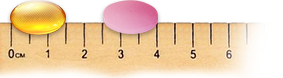

De ce îmi place să recomand Femibion Sarcina Sănătoasă 2?
1. Nu determină creșterea în greutate a mamei și copilului.
1
2. Conține doza optimă de DHA (200 mg) pentru buna dezvoltare a creierului și retinei bebelușului.
3. Este ușor de utilizat de către gravide în fiecare zi, din luna a 4-a până la sfârșitul perioadei de alăptare.
Sunt gravidele mulțumite dacă le recomandați Femibion Sarcina Sănătoasă 2?
1. Da, pentru că este excelent tolerat de către organismul pacientelor din luna a 4-a până la sfârșitul perioadei de alăptare.
2. Da, pentru că poate fi utilizat zilnic, fără grija unor reacții adverse, cum sunt greața și vărsăturile.
2
3. Da, pentru că mama este singura sursă de DHA pentru făt și copil, iar Femibion conține doza optimă recomandată de 200 mg DHA.
Ce înseamnă 1 cm pentru dumneavoastră?

1. Un comprimat de .
2. O capsulă de .
3. Un Tic-Tac.
1
Dacă gravida are o dietă normocalorică.
2
Prospect Femibion.